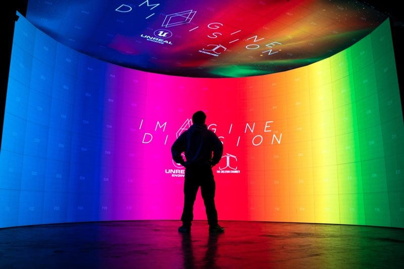

Virtual production
ICVFX, LED walls, nDisplay, camera tracking, lens calibration, OCIO, genlock, timecode and real-time compositing.
Virtual production | Live systems | Filmmaking
I build the production systems behind ambitious screen work: LED ICVFX stages, virtual-artist pipelines, live control rooms, camera workflows and custom software that let creative teams operate with confidence.
My work sits between image-making and infrastructure: the visible frame matters, but so do tracking, sync, latency, color, control rooms and the people operating the show.
ICVFX, LED walls, nDisplay, camera tracking, lens calibration, OCIO, genlock, timecode and real-time compositing.
Motion capture, virtual cameras, NDI media pipelines, live streaming systems and cinematic workflows for VTuber and virtual-event production.
Event visual systems, projection mapping, vMix, Resolume, Dante, lighting, network architecture and custom software for production teams.
Virtual production
I researched high-resolution LED panels, handled the physical build, configured render nodes and networking, then connected Unreal Engine, nDisplay, tracking and lens calibration into a usable stage workflow.
That practical mix of film, event engineering and software is the through-line of my production work.
Explore the portfolio
Representative work from the portfolio, grouped around the production problems solved.

On-location VTuber and virtual-artist setups where mocap data, Unreal Engine, media servers, NDI streams and low-latency workflows stay in sync.

Director of photography, assistant camera, gaffer, editor, VFX and motion-graphics work across commercial projects and music videos.

Visual mixing, projection mapping, LED displays, streaming, audio, lighting and control workflows for corporate events and music festivals.
"The work is never only the image or only the system. The job is to make both reliable enough for people to create with confidence."NoodleDoStuff portfolio direction